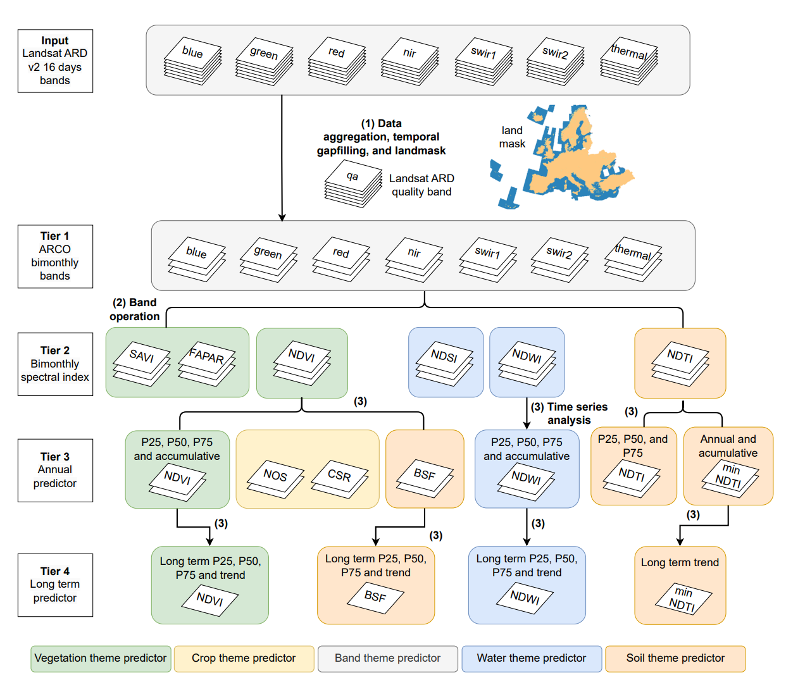
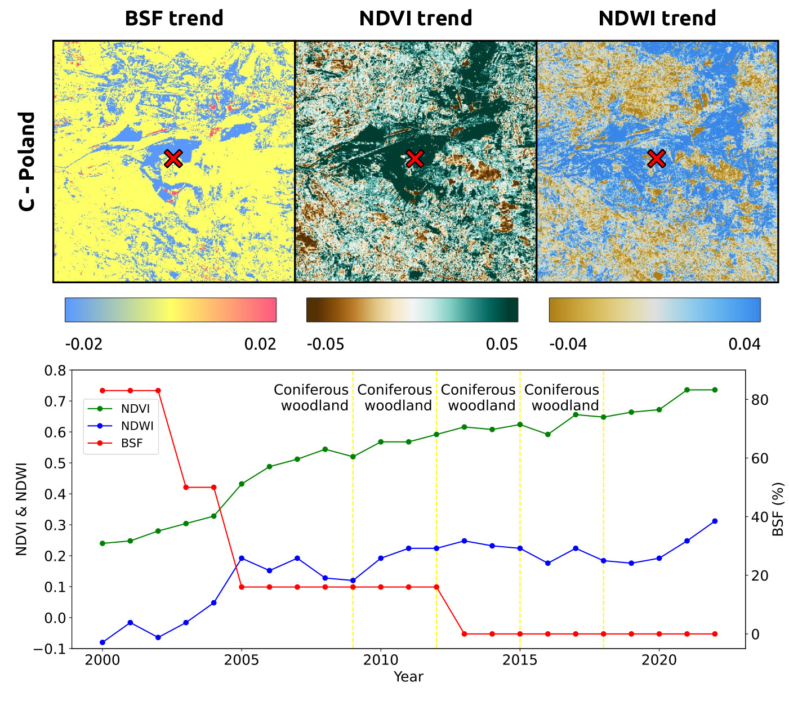

Available layers
This section systematically list all layers provided within the AI4SoilHealth Soil Health Data Cube for Europe. Note, the list if constantly updated. Some layers are available on Zenodo and on S3, but most layers are only available on S3. The total size of all data is at the order of 20 to 30TB.
In principle, the data in SHDC is licensed under CC-BY, and the code is licensed under the MIT License. Training points are used under various terms and conditions.
Pan-EU Landmask

Three Pan-EU land masks designed for different specific applications in the production of soil health data cube:
- Land mask: with values differentiating land, ocean, and inland water
- NUT-3 code map: with values differentiating administrative area at nut-3 level
- ISO-3166 country code map: with values differentiating countries according to ISO-3166 standard The jupyter notebooks and bash files that are used to produce masks, merge tiles, reproject coordinate systems, and resample to another resolution.
All the landmasks are aligned with the standard spatial/temporal resolution and sizes indicated/recommended by AI4SoilHealth project, WP5. The coverage of these maps closely match the data coverage of https://land.copernicus.eu/pan-european i.e. the official selection of countries listed here: https://lanEEA39d.copernicus.eu/portal_vocabularies/geotags/eea39:
- Land mask: with values differentiating land, ocean, and inland water;
- NUT-3 code map: with values differentiating administrative area at nut-3 level;
- ISO-3166 country code map: with values differentiating countries according to ISO-3166 standard;
The jupyter notebooks and bash files that are used to produce masks, merge tiles, reproject crs, and resample to another resolution.
All the landmasks are aligned with the standard spatial/temporal resolution and sizes indicated/recomended by AI4SoilHealth project, WP5. The coverage of these maps closely match the data coverage of https://land.copernicus.eu/pan-european i.e. the official selection of countries listed here: https://lanEEA39d.copernicus.eu/portal_vocabularies/geotags/eea39.
These masks are created by Xuemeng, Yu-Feng, and Martijn from OpenGeoHub. If you spot any problems in the land masks, or see any possible improvements in them, or have any questions, just raise an issue here or send us emails! We appreciate any feedback that could refine these masks.
Landsat-based Spectral Indices Data Cube

This data cube offers a time-series of Landsat-based spectral indices maps across continental Europe including Ukraine, the UK, and Turkey from 2000 to 2022. At a resolution of 30-meters, it includes bi-monthly, annual, and long-term analyses, focusing on key aspects of soil health such as vegetation cover, soil exposure, tillage practices, and crop intensity. Apart from direct monitoring, analysis, and verification of specific aspects of soil health, this data cube also provides important input for modeling and mapping soil properties. All the maps are aligned with the standard spatial/temporal resolution and sizes indicated/recomended by AI4SoilHealth project, WP5.
Please cite as:
@Article{tian2024time,
AUTHOR = {Tian, X. and Consoli, D. and Witjes, M. and Schneider, F. and Parente, L. and \c{S}ahin, M. and Ho, Y.-F. and Mina\v{r}\'{\i}k, R. and Hengl, T.},
TITLE = {Time-series of Landsat-based bi-monthly and annual spectral indices for continental Europe for 2000--2022},
JOURNAL = {Earth System Science Data Discussions},
VOLUME = {2024},
YEAR = {2024},
PAGES = {1--49},
URL = {https://essd.copernicus.org/preprints/essd-2024-266/},
DOI = {10.5194/essd-2024-266}
}Summary
The corresponding folder provides:
- Essential code & data used to generate/analyze/visualize/upload the landsat-based spectral indices data cube,
- Visualization for selected indices.
The indices include:
- Vegetation index: Normalized Difference Vegetation Index (NDVI), Soil Adjusted Vegetation Index (SAVI), and Fraction of Absorbed Photosynthetically Active Radiation (FAPAR).
- Soil exposure: Bare Soil Fraction (BSF).
- Tillage and soil sealing: Normalized Difference Tillage Index (NDTI) and minimum Normalized Difference Tillage Index (minNDTI).
- Crop patterns: Number of Seasons (NOS) and Crop Duration Ratio (CDR).
- Water dynamics: Normalized Difference Snow Index (NDSI) and Normalized Difference Water Index (NDWI)
General steps of maps production are described below:
A preview of the BSF (%) time series for the former Szczakowa sand mine, south Poland is shown below.

Access to the data cube
To ensure accessibility and proper usage of the dataset, we have distributed the data across multiple platforms for different purposes:
- Zenodo https://zenodo.org/communities/ai4soilhealth
- This dataset is registered on Zenodo with preview visualization and a valid DOI: https://doi.org/10.5281/zenodo.10776891.
- Due to the storage limit of Zenodo in each bucket, uploading all data layers to Zenodo is impractical and not beneficial for users as it would be too distributed. Therefore, for bimonthly predictors, only data layers for the years 2000 and 2022 are uploaded. All the annual and long-term predictors are available, though.
- Wasabi cloud
- The complete dataset is hosted on Wasabi’s cloud in COG format, enabling efficient storage, retrieval, and secure data management.
- A comprehensive index of all the data layers stored and maintained on Wasabi.com is available through a navigation catalog in a Google Sheet, facilitating the indexing, finding, and downloading of all the predictor layers.
Contacts and issues
The SHDC data was created by Xuemeng, Davide, Leandro, and Yu-Feng from OpenGeoHub. If you spot any problems in the maps, or see any possible improvements in them, or see any potential collaborations, or etc…, just raise an issue here or send us emails! We appreciate any feedbacks/helps that could refine them.
Predictive models for soil properties
Overview
The folder soil_property_model_pipeline contains scripts used to build predictive models for 10 key soil properties:
- Soil Organic Carbon (SOC)
- Nitrogen (N)
- Carbonate (CaCO3)
- Cation Exchange Capacity (CEC)
- Electrical Conductivity (EC)
- pH in Water
- pH in CaCl2 Solution
- Bulk Density
- Extractable Phosphorus (P)
- Extractable Potassium (K)
The notebooks and their content:
- Notebooks (001 – 009)
- Designed to test various steps in the predictive model building process
- Explore and validate different methodologies and approaches for model construction
- Benchmark Pipeline Script
benchmark_pipeline.pyautomates the entire model-building pipeline- Streamlines the process based on the initial 10 notebooks
- Property-Specific Modeling (010 – 011)
- Notebooks with indices
010 -- 011loop the pipeline through different soil properties - Identify and optimize the best model for each property
- Notebooks with indices
- Prediction Interval Models (012 – 014)
- Notebooks with indices
012 -- 014build models that estimate prediction intervals - Add a layer of uncertainty quantification to the predictions
- Notebooks with indices
Input materials
Predictions of soil properties are based on the following training and input data:
- The training data includes comprehensive metadata (sampling year, depth, location) and quality scores for each measurement, covering the above mentioned 10 properties. Details can be found in AI4SH soil data harmonization specifications.
- The features used for model fitting and map production contain around 450 covariate layers. Details can be found in AI4SH soil health data cube covariates preparation. These layers comply with the technical specifications outlined in D5.1: Soil Health Data Cube, ensuring they are well-suited for integration, cross-comparison, and subsequent map production. The covariate layers include a diverse range of geospatial layers detailing various environmental conditions, categorized into:
- Climate
- Landsat-based spectral indices
- Parental material
- Water cycle
- Terrain
- Human pressure factors
Pipeline Description
A standardized pipeline has been developed to automate model development for predicting soil properties. This pipeline enhances model performance through hyper-parameter tuning, feature selection, and cross-validation. The process begins with inputting harmonized soil data, covariate paths, and a defined quality score threshold to ensure data reliability. The inputs, processing steps and outputs are (Tian et al. 2024?):
- Input Data Preparation:
- Harmonized soil data
- List of covariate paths
- Quality score threshold
- Model Candidates:
- Artificial Neural Network (ANN)
- Random Forest (RF)
- LightGBM
- Weighted variants (excluding ANN due to scikit-learn limitations)
- Processing steps:
- Separate calibration, training and testing dataset:
- Validation Dataset: 5000 soil points selected from LUCAS through stratified random sampling.
- Calibration Dataset: 20% of remaining soil data points selected in a stratified manner from each spatial block (approx. 120 km grids).
- Training Dataset: remaining 80% soil data points.
- Calibration using calibration dataset
- Feature Selection: Using a default Random Forest (RF) model from scikit-learn.
- Hyper-parameter Tuning: Using HalvingGridSearch from scikit-learn.
- Cross-validation of base models on training dataset
- Spatial Blocking Strategy: in each run, it is ensured that geographically proximate (approx. 120 km grids) soil points are not selected together.
- Method: 5-fold spatially blocked cross-validation (CV).
- Metrics: Coefficient of determination (R2), Root Mean Square Error (RMSE), Concordance Correlation Coefficient (CCC), and computation time.
- Testing on individual validation dataset
- All 5 candidate models are trained on the whole training dataset.
- And then being tested on the individual validation dataset, to get a set of objective metrics.
- Separate calibration, training and testing dataset:
- Intemediate outputs during process:
- Produces calibration and training datasets
- Trained models
- Sorted feature importance
- Performance metrics and accuracy plots
- Final Model
- Selection: Model with the best overall performance across metrics for both CV and individual validation.
- Training: Trained on the complete dataset of soil points using optimized features and parameters.
- Quantile Regression Model: A quantile model will be trained with same parameters on the complete data set to estimate prediction intervals.
- Map Production: Fully trained model used for soil property prediction and uncertainty map production.
Contacts
These maps are created by Xuemeng, Rolf, Davide, Leandro, Robert and Yu-Feng from OpenGeoHub. If you spot any problems in the maps, or see any possible improvements in them, or see any potential collaborations, or etc…, just raise an issue here or send us emails! We appreciate any feedbacks/helps that could refine them.
30-m resolution maps of SOCD and prediction uncertainty for Europe (2000–2022) in 3D+T
Summary
The folder SOCD_map contains scripts used to test, train, evaluate predictive models for soil organic carbon density (SOCD, kg/m3) based on:
- 22,428 lab measurements with both SOC content (g/kg) and fine earth (size < 2mm) bulk density.
- a wide range of environmental covariates, especially the time series of 30m Landsat-based spectral indices.
The scripts used to generate the figures in the paper are also included.
Please cite as:
@Article{tian2025socd,
AUTHOR = {Tian, X. and {de Bruin}, S. and Simoes, R. and Isik, M.S. and Mina\v{r}\'{\i}k, R. and Ho, Y.-F. and Sahin, M. and Herold, M. and Consoli and Hengl, T.},
TITLE = {Spatiotemporal prediction of soil organic carbon density for Europe (2000--2022) in 3D+T based on Landsat-based spectral indices time-series},
JOURNAL = {PeerJ},
VOLUME = {in review},
YEAR = {2024?},
PAGES = {1--49},
DOI = {10.21203/rs.3.rs-5128244/v1}
}30-m resolution maps of soil types (WRB)
Summary
The folder WRB_map contains scripts used to test, train, evaluate predictive models to map soil types based on the IUSS World Reference Base classification system. For this we used (Minařı́k et al. 2024?):
- cca 19,000 training points with ground observation of soil types;
- a wide range of environmental covariates, especially the time series of 30-m Landsat-based spectral indices;
The scripts used to generate the figures in the paper are also included.
Please cite as:
@Article{minarik2025wrb,
AUTHOR = {Mina\v{r}\'{\i}k, R. and Hengl, T. and Simoes, R. and Isik, M.S. and Ho, Y.-F. and Tian, X.},
TITLE = {Soil type (World Reference Base) map of Europe based on Ensemble Machine Learning and multiscale EO data},
JOURNAL = {PeerJ},
VOLUME = {in review},
YEAR = {2024?},
PAGES = {1--32},
DOI = {https://doi.org/10.21203/rs.3.rs-5244083/v1}
}Disclaimer
The production of these data layers are parts of AI4SoilHealth project. The AI4SoilHealth project project has received funding from the European Union’s Horizon Europe research an innovation programme under grant agreement No. 101086179. Views and opinions expressed are however those of the author(s) only and do not necessarily reflect those of the European Union or European Commision. Neither the European Union nor the granting authority can be held responsible for them. The data is provided “as is”. AI4SoilHealth project consortium and its suppliers and licensors hereby disclaim all warranties of any kind, express or implied, including, without limitation, the warranties of merchantability, fitness for a particular purpose and non-infringement. Neither AI4SoilHealth Consortium nor its suppliers and licensors, makes any warranty that the Website will be error free or that access thereto will be continuous or uninterrupted. You understand that you download from, or otherwise obtain content or services through, the Website at your own discretion and risk.
References
Minařı́k, R., T. Hengl, R. Simoes, M. S. Isik, Y.-F. Ho, and X. Tian. 2024? “Soil Type (World Reference Base) Map of Europe Based on Ensemble Machine Learning and Multiscale EO Data.” PeerJ in review (2024?): 1–32. https://doi.org/https://doi.org/10.21203/rs.3.rs-5244083/v1.
Tian, X., D. Consoli, M. Witjes, F. Schneider, L. Parente, M. Şahin, Y.-F. Ho, R. Minařı́k, and T. Hengl. 2024. “Time-Series of Landsat-Based Bi-Monthly and Annual Spectral Indices for Continental Europe for 2000–2022.” Earth System Science Data Discussions 2024: 1–49. https://doi.org/10.5194/essd-2024-266.
Tian, X., S. de Bruin, R. Simoes, M. S. Isik, R. Minařı́k, Y.-F. Ho, M. Sahin, M. Herold, Consoli, and T. Hengl. 2024? “Spatiotemporal Prediction of Soil Organic Carbon Density for Europe (2000–2022) in 3D+t Based on Landsat-Based Spectral Indices Time-Series.” PeerJ in review (2024?): 1–49. https://doi.org/10.21203/rs.3.rs-5128244/v1.